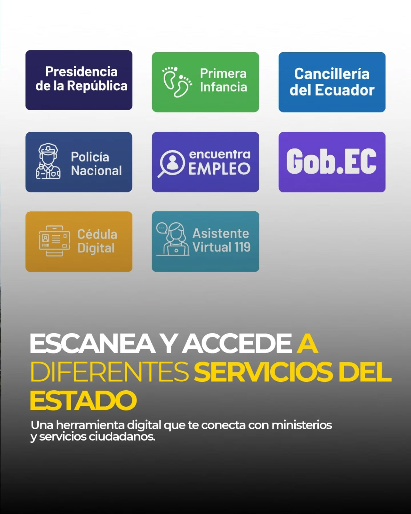

Sociedad
Educación en línea
La educación a distancia corre sobre la Web. En un entorno virtual de aprendizaje se publican los contenidos de cada materia, se entregan las tareas, se participa en foros y se mantiene la comunicación con el docente, sin importar dónde esté cada estudiante.
Servicios gubernamentales en línea

Los portales de las instituciones públicas permiten consultar información y realizar trámites desde un computador o un celular, sin hacer fila en una oficina. Estos sitios pertenecen al género de sitios gubernamentales: su propósito es ofrecer información y servicios públicos.
La brecha digital
No todas las personas se benefician por igual de las tecnologías web. La brecha digital es la diferencia entre quienes tienen acceso a Internet y quienes no lo tienen. Según la Unión Internacional de Telecomunicaciones (UIT), esta diferencia está relacionada con:
- El nivel de ingresos del país.
- La ubicación: zonas urbanas o rurales.
- La edad de las personas.
| Grupo | Personas que usan Internet |
|---|---|
| Población mundial | 74 % |
| Países de ingreso alto | 94 % |
| Países de ingreso bajo | 23 % |
| Zonas urbanas | 85 % |
| Zonas rurales | 58 % |
| Jóvenes de 15 a 24 años | 82 % |
| Resto de la población | 72 % |
Fuente: Unión Internacional de Telecomunicaciones (2025). Measuring digital development: Facts and Figures 2025.